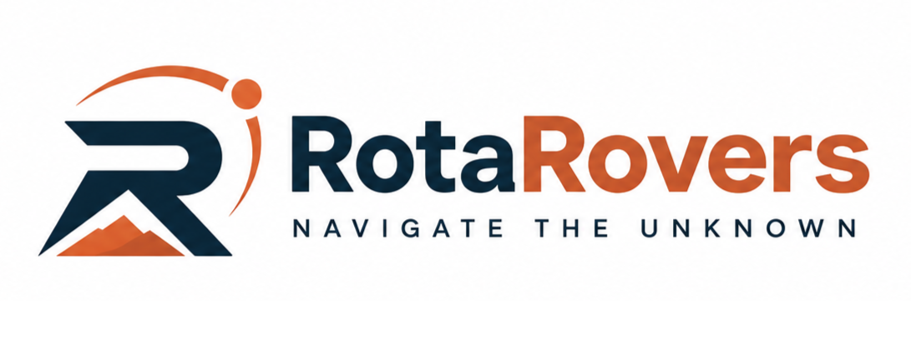
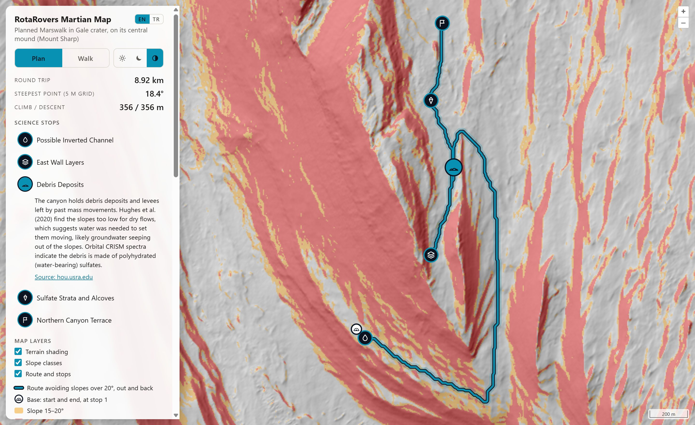

AI-generated logo (ChatGPT)RotaRovers Martian Map
Plan a Marswalk before you step out. Follow it while you walk.
- Challenge
- Interplanetary Survival Guide: Martian Map · NASA Space Apps Challenge 2026
- Team
- RotaRovers — Recep Mert İkiz · Mustafa Ensar Sadıkoğlu · Ahmet Melik İnce
- Live
- rotarovers-martian-map.pages.dev
The problem
An astronaut on Mars has two moments that need a map
Before the walk
Which route?
- Reach the science stops: signs of past water and habitability
- Stay on ground a suited crew can walk: no slopes over 20°
- Know the distance, climb and time before leaving the base
During the walk
Where am I?
- Current position and heading on the route
- Next stop, remaining distance and time
- The turn-back point: half of the walk's time budget
Site: Gale crater, on its central mound (Mount Sharp), about 18 km from Curiosity's traverse ·
HiRISE terrain model DTEEC_006855_1750_007501_1750_A01
How the route is made
From NASA terrain data to a walkable route
HiRISE DTMNASA MRO elevation model of the canyon, read over HTTP
5 m slope grid75 % of the area is under 20°, 10 % is over 30°
No-go over 20°NASA's lunar EVA walking limit, used as a working value for Mars
Least-cost routeThrough the 5 science stops and back to the base
8.92 km
Round trip
18.4°
Steepest point
356 m
Climb and descent
4h 27m
At 2 km/h (NASA EVA rate)
The farthest point is 1.74 km from the base in a straight line: inside the ~2 km walking radius NASA plans for Artemis III. The walked path is longer because it goes around ground steeper than 20°.
3 / 7Plan mode
Choose the route before the walk

- Three map layers you can switch: terrain shading, slope classes (15–20° caution, over 20° no-go), route
- Five science stops, each with its reason and a source (HiRISE, LPSC papers)
- Conditions: Curiosity REMS weather, InSight wind, Curiosity RAD radiation: about 0.12 mSv for this walk
- Every reading is dated and labelled as a point measurement, not a forecast
Walk mode
Follow the route during the walk

- The map follows the astronaut; drag to look around, one tap to lock back on
- Where am I, next stop, remaining distance and time, the turn-back point
- Elevation profile and the slope just ahead; leg-by-leg breakdown
- EVA sheet to copy or download; English and Turkish; light and dark
- No GPS on Mars yet: a slider and playback simulate the walk
Data and validity
Built on NASA data, checked by tests
NASA data
- MRO HiRISE terrain model and images
- Curiosity REMS weather and rover waypoints
- Curiosity RAD surface radiation
- InSight weather (wind)
- NASA Exploration EVA ConOps: 20° slope, 2 km/h, ~2 km radius
Checked by tests
- Steepest point on the route stays under 20°
- The route is continuous and inside the terrain model
- Route length in the data pipeline and in the app agree (Mars radius, 3,396 km)
- 54 automated tests (24 Python, 30 web)
Honest limits
- 20° is a lunar limit; Mars has no published value yet
- Weather and radiation were measured at other places and times
- Walk position is simulated, not live
Team RotaRovers
Who built it, and how
Recep Mert İkizData pipeline, route, map, both modes' interface, deployment
Mustafa Ensar SadıkoğluWalk view: position, playback, telemetry, elevation profile
Ahmet Melik İnceScience stops and their sources; references
Use of AI
- The idea and every design decision came from the team.
- Claude Code (Claude Opus 5.5) and Google Antigravity helped write code, tests and the Turkish translation.
- The team logo was generated with ChatGPT and is marked as such.
Approtarovers-martian-map.pages.dev
Codegithub.com/mertikiz/rotarovers-martian-map (MIT)
7 / 7